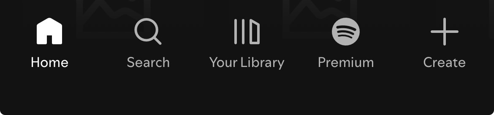
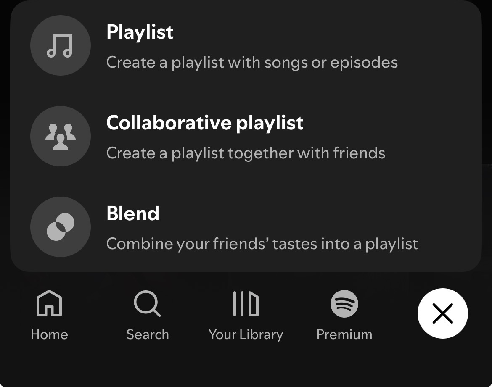
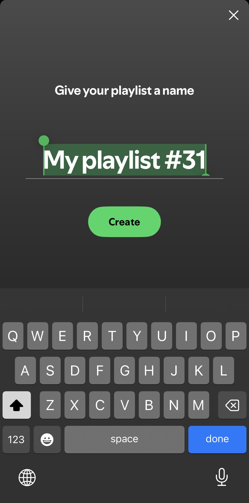
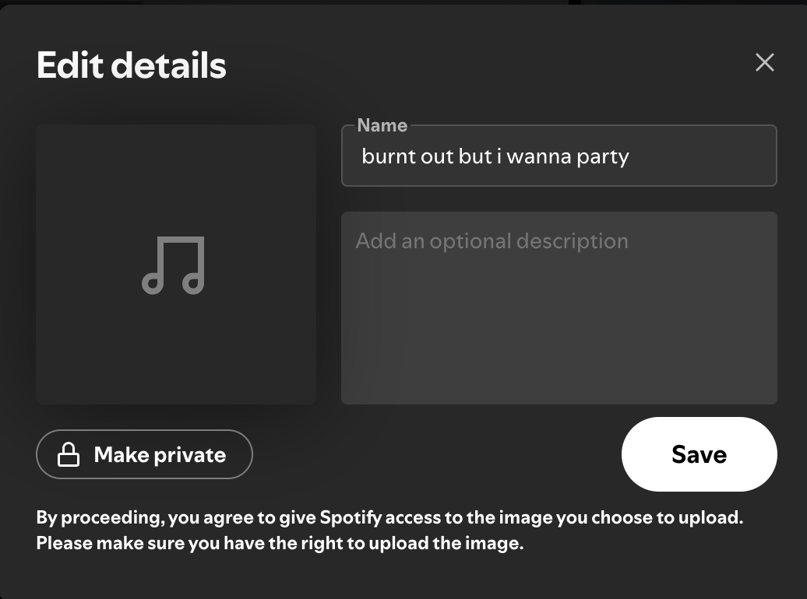
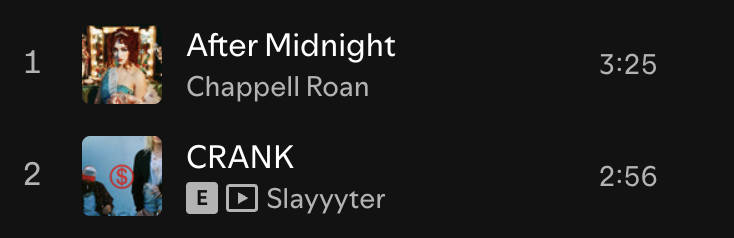
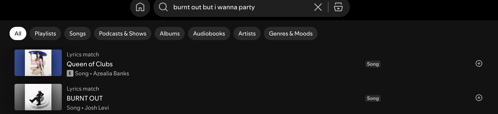
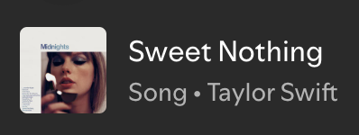
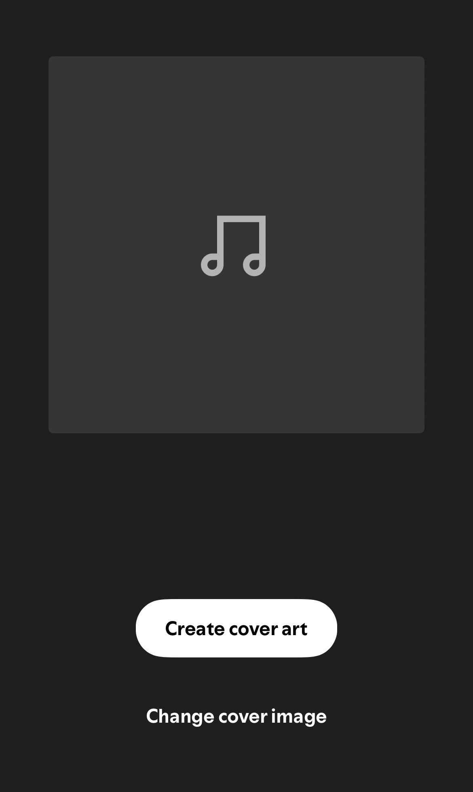

Open Spotify!
Click on the + icon on the bottom right corner

Click on "Create Playlist"

Click on "My Playlist #" to change the name

Enter what you're feeling

Pick 2 songs that immediately remind you of feeling this way

Pick 2 songs by typing your feeling directly into the search bar

Pick a song by your favourite artist that could resonate with this feeling
Pick a song that is the polar opposite of this feeling and might help you snap out of it

Additionally, you may search up an image on Pinterest about said feeling
Click on the empty image box next to where you put your title and insert the image to truly capture your feeling

OR Go back to the main recipe!